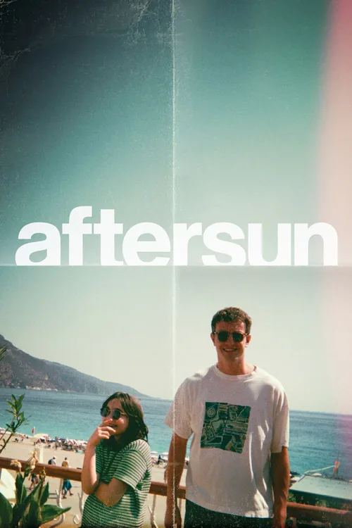

cultay reúne tus libros, películas y series en un solo sitio — y responde a la única pregunta que importa a las diez de la noche.
Beta privada · gratis el primer año · sin spam.
Pediste algo denso y tienes dos horas. Puntuaste Interstellar con un 4,5 y dejaste Aniquilación a medias: esta va por el mismo sitio, pero se resuelve con lenguaje y no con espectáculo.
No hace falta cuenta para verlo funcionar. Dinos cómo estás y qué tiempo tienes; el motor cruza tu momento con tu historial y con perfiles parecidos al tuyo — y te da una cosa, con el motivo escrito.

—
Una sola lista para las tres cosas, con los mismos estados y la misma valoración. Lo que registraste hace tres años sigue ahí, y cuenta igual que lo de anoche.
Estado, avance y valoración con matices. Sin retos anuales ni cifras que te hagan sentir en deuda con tu propia lectura.
Lo que quieres ver, lo que viste y lo que te pareció, con media estrella de precisión y nota privada si te apetece.
Por temporada y capítulo, para que al volver después de dos meses no tengas que adivinar por dónde ibas.
Y cuando las tres cosas están juntas, las recomendaciones dejan de ser de libros o de películas: son de lo que te apetece.
Los mismos tres estados para todo: Quiero · En curso · Completado. Filtras por formato o por estado, buscas por título, autor o director — y en claro o en oscuro, como prefieras trabajar.
Puntúas de 0,5 a 5 en un gesto, y si quieres añades dos matices: cómo iba de ritmo y cómo te dejó. Cada valoración afina la siguiente recomendación — sin pedirte nada más.
Exporta el CSV de tu app de lectura o de cine, súbelo y cultay mapea las columnas por ti. Lo que ya habías puntuado sigue puntuado, y el motor arranca sabiendo cosas de ti desde el primer día.
Apuntarme a la betaTodo lo que registras se convierte en estadística: por formato, por género, por mes. Sin gráficas que no dicen nada — cifras que se leen de un golpe.
Goodreads ve libros. Letterboxd ve cine. Trakt ve series. cultay ve las tres cosas a la vez — y eso es lo que le permite recomendarte un libro después de una serie, no solo más series.
Si te enganchó una serie, la respuesta puede ser un libro. Ningún competidor puede ofrecerte eso porque ninguno ve las tres cosas.
Modelo freemium limpio: pagas tú o no paga nadie. Tu biblioteca es privada por defecto y decides qué se ve en tu perfil.
Una novela de un sello pequeño o una película de festival pesan igual en la búsqueda que un éxito de taquilla. Aquí la cultura no tiene liga inferior.
El motor cruza formatos y tu estado de ánimo — no maximiza tu tiempo de pantalla, te ayuda a decidir y punto.
Habrá un plan gratuito con la biblioteca, los estados y la búsqueda. Quien entre por la beta privada tiene además todas las funciones de pago gratis el primer año — incluidas las recomendaciones ilimitadas y las estadísticas completas.
Sí. Las apps de lectura y de cine más usadas exportan un CSV, y cultay lo importa mapeando las columnas automáticamente: título, autor o director, fecha y valoración. Puedes revisar el mapeo antes de confirmar, y no se crean duplicados si importas dos veces.
De catálogos y bases de datos especializadas de cine, series y libros. Si falta un título, puedes añadirlo a mano y lo revisamos.
La beta abre como aplicación web, que funciona en el móvil y se puede instalar en la pantalla de inicio. Las apps nativas de iOS y Android van después, y quien esté en la beta entra primero.
Sirve para recomendarte mejor y para tus estadísticas. No se vende, no se cede a anunciantes y no hay perfilado publicitario. Tu biblioteca es privada salvo lo que tú decidas hacer público en tu perfil, y puedes exportarla o borrarla entera cuando quieras.
Por tandas, para no romper nada. Al apuntarte recibes un solo correo cuando te toque el hueco — no hay lista de espera pública ni sistema de invitaciones que haya que compartir.
Gratis durante la beta, en iPhone y Android. Abrimos por tandas y te escribimos cuando te toque. Quien entra en la beta tendrá condiciones de fundador cuando haya planes de pago.
No se pudo enviar. Inténtalo de nuevo en unos segundos.
Te das de baja con un clic en cualquier correo. Al apuntarte aceptas la política de privacidad.